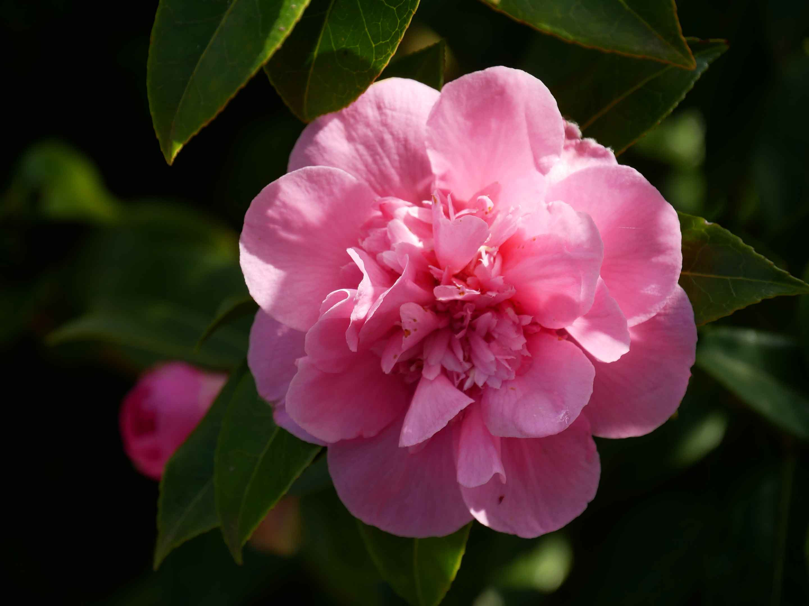
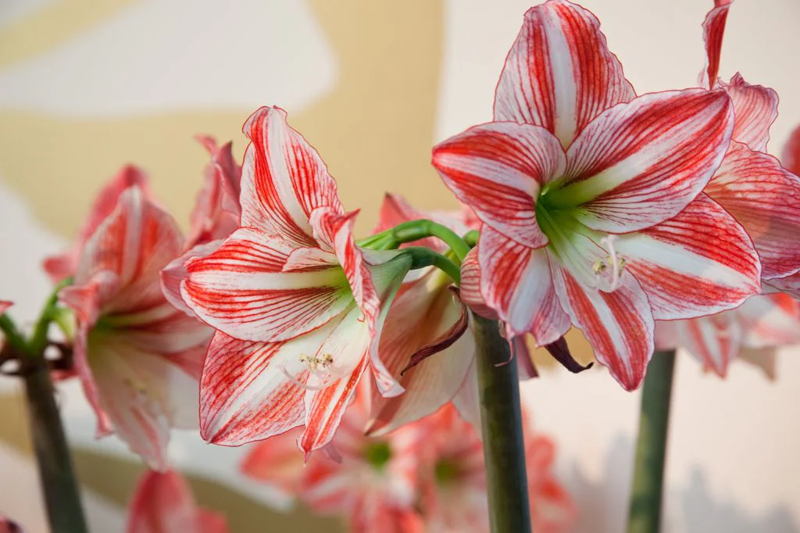

Exposição de lindas flores🌷
A camélia é uma flor que encanta pela sua beleza clássica e sofisticada.Originárias da Ásia, as camélias conquistaram jardineiros e admiradores de plantas ao redor do mundo.

A amarílis simboliza força, beleza, orgulho e amor, frequentemente representando resiliência e determinação devido à sua capacidade de florescer nos meses de inverno.
